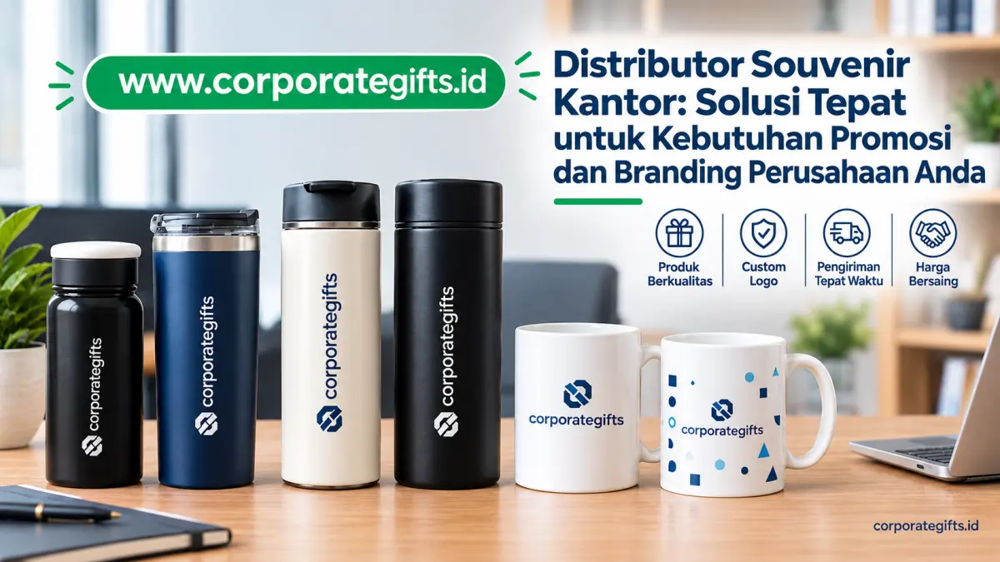

Corporate Gifts ID - Distributor souvenir kantor adalah mitra bisnis strategis yang menyediakan layanan lengkap pembuatan merchandise perusahaan secara terpadu, mulai dari tahap konsultasi konsep, pemilihan material berkualitas, pembuatan purwarupa fisik, produksi massal, quality control (QC) berlapis, hingga pengiriman logistik ke berbagai cabang perusahaan di seluruh Indonesia. Souvenir kantor berfungsi sebagai media komunikasi visual nyata yang mencerminkan profesionalisme dan reputasi perusahaan, sekaligus instrumen promosi berbiaya terukur yang efektif meningkatkan loyalitas klien, relasi B2B, dan motivasi kerja karyawan.
Dalam lanskap bisnis modern yang sarat persaingan, setiap detail interaksi dengan pemangku kepentingan memiliki implikasi branding yang besar. Tidak hanya kualitas portofolio layanan atau produk utama yang diperhatikan, tetapi juga bagaimana sebuah perusahaan menampilkan citra kehormatan dan apresiasinya di mata publik. Salah satu langkah paling elegan dan terbukti berdampak jangka panjang dalam memperkuat reputasi korporat adalah pengadaan merchandise berkelas melalui kemitraan bersama distributor souvenir kantor berpengalaman.
Apa Itu Souvenir Kantor dan Mengapa Penting bagi Branding Perusahaan
Souvenir Kantor sebagai Cerminan Profesionalisme dan Identitas Perusahaan
Souvenir kantor bukan sekadar hadiah gratisan atau pelengkap seremonial acara tahunan kantor semata. Produk ini merupakan representasi nyata dari nilai, budaya kerja, dan standar kredibilitas suatu entitas bisnis. Ketika dirancang dengan sentuhan desain yang matang dan material berdaya tahan tinggi, souvenir kantor mampu menanamkan impresi positif yang membekas, menghadirkan persepsi brand yang prestisius, serta merekatkan jalinan kemitraan jangka panjang.
Dalam disiplin pemasaran modern, merchandise kantor memegang posisi krusial sebagai media komunikasi visual pasif yang terus bekerja lama setelah sebuah pertemuan bisnis atau konferensi berakhir. Setiap logo yang diukir rapi, harmoni warna korporat yang akurat, hingga packaging mewah yang disajikan, membawa narasi bahwa perusahaan Anda memiliki komitmen penuh terhadap mutu dan kesempurnaan detail.
Sebagai contoh nyata, korporasi sektor teknologi finansial yang membagikan powerbank berkapasitas besar dengan bodi aluminium custom mencerminkan nilai inovasi, efisiensi kerja, dan mobilitas tinggi. Sebaliknya, institusi perbankan atau korporasi yang mengusung prinsip keberlanjutan (ESG) dengan memilih produk berbahan bambu alami atau rPET daur ulang menegaskan keselarasan nilai korporat terhadap pelestarian lingkungan.
Dampak Souvenir Kantor terhadap Loyalitas Klien dan Karyawan
Bagi klien dan mitra strategis, bingkisan korporat merupakan wujud penghormatan tulus atas kolaborasi yang terjalin. Personalisasi seperti ukiran inisial nama atau pesan apresiasi khusus menciptakan ikatan emosional mendalam. Klien B2B yang merasa dihargai secara personal memiliki tingkat retensi yang jauh lebih tinggi dan terbuka lebar terhadap peluang perpanjangan kontrak kerja sama di masa mendatang.
Bagi internal organisasi, penyediaan merchandise kantor fungsional seperti executive notebook planner, polo shirt berkerah bordir rapi, hingga tumbler tahan panas dingin berfungsi sebagai instrumen apresiasi karyawan yang efektif. Pemberian paket souvenir kantor yang fungsional menumbuhkan rasa memiliki (sense of belonging), mendongkrak moral kerja tim, dan mengubah karyawan menjadi duta merek (brand ambassador) yang bangga memperkenalkan tempat kerjanya ke publik luas.
Peran Distributor dalam Menjaga Kualitas dan Konsistensi Brand
Di balik keberhasilan kampanye promosi melalui cinderamata korporat, ada pilar penting yang kerap menentukan hasil akhir: kepiawaian distributor souvenir kantor profesional. Distributor bukan sekadar pihak penyedia barang dagangan atau perantara biasa, melainkan mitra konsultan yang memahami secara mendalam bagaimana setiap spesifikasi teknis merchandise merepresentasikan brand guideline perusahaan klien.
Distributor berpengalaman menyediakan solusi terintegrasi dari hulu ke hilir. Tim kreatif akan mengawal ketepatan palet warna korporat, memastikan file vektor logo dicetak dengan resolusi optimal tanpa distorsi, menguji sampel sebelum produksi massal, hingga melakukan pengepakan berstandar logistik tinggi agar barang tiba dalam kondisi prima.

Kurasi ragam produk souvenir kantor mulai dari tumbler premium, gift box, hingga merchandise custom logo.
Fungsi Strategis Souvenir Kantor dalam Dunia Korporat
Souvenir sebagai Media Komunikasi Visual Berkelanjutan
Keunggulan komparatif terbesar souvenir fisik dibandingkan kanal periklanan digital terletak pada durabilitas paparan visualnya. Iklan digital di media sosial mungkin hanya melintas beberapa detik di layar ponsel sebelum digulir. Sebaliknya, souvenir fungsional seperti tumbler stainless steel, meja kalender kayu, atau wireless mouse pad digunakan hampir setiap hari di atas meja kerja.
Eksposur berulang tanpa henti ini secara subliminal memicu brand recall yang sangat kuat. Ketika klien membutuhkan solusi bisnis atau vendor di sektor industri Anda, nama perusahaan Anda adalah hal pertama yang terlintas dalam memori mereka berkat kehadiran konstan cinderamata tersebut dalam keseharian mereka.
Souvenir dan Engagement Pelanggan yang Terukur
Sentuhan fisik melalui cinderamata eksklusif menghadirkan pengalaman sensorik yang tidak bisa digantikan oleh format komunikasi virtual. Bobot material yang mantap, kehalusan tekstur kulit sintetis, hingga presisi ukiran grafir laser memberikan sinyal langsung ke otak penerima mengenai kelas dan keseriusan perusahaan pemberi.
Studi Kasus: Brand Skala Global dan Pemanfaatan Merchandise
- Google: Memanfaatkan lini merchandise fungsional seperti hoodie katun berkualitas, ransel ergonomis, dan botol minum ramah lingkungan untuk membangun kultur keterbukaan dan inovasi di mata publik dan talenta global.
- Starbucks: Mengembangkan lini merchandise drinkware musiman menjadi bagian gaya hidup urban premium, yang tidak hanya meningkatkan omset ritel tetapi juga mengikat loyalitas pelanggan pada ekosistem merek mereka.
- Tokopedia & Ekosistem Startup: Menggunakan stationery kit bernuansa warna khas brand untuk memperkuat pengalaman onboarding talenta baru dan mitra merchant lokal di berbagai kota.
Jenis-Jenis Souvenir Kantor yang Paling Diminati Perusahaan Modern
1. Souvenir Eksklusif Eksekutif dan VIP
Dirancang khusus untuk jajaran dewan direksi, pemegang saham, dan tamu kehormatan instansi. Karakteristik utamanya memakai bahan premium seperti kulit asli, paduan logam kuningan atau stainless, serta finishing kayu solid. Produk favorit mencakup organizer agenda kulit dengan emboss presisi, souvenir pulpen metal dengan mekanisme putar halus, jam meja kristal, hingga gift box hamper mewah.
2. Merchandise Fungsional Harian: Tumbler dan Alat Tulis
Merupakan kelompok produk dengan utilitas tertinggi untuk keperluan promosi massal dan seminar perusahaan. Souvenir tumbler custom menjadi primadona karena mendukung gaya hidup sehat, mengurangi sampah botol plastik sekali pakai, dan menawarkan area penempatan logo yang lapang serta jelas terlihat.
3. Souvenir Ramah Lingkungan (Sustainable Products)
Seiring komitmen dunia korporasi terhadap netralitas karbon, permintaan terhadap souvenir ramah lingkungan melonjak tajam. Cinderamata berbasis kain kanvas katun organik, pulpen dari bioplastik gandum, notes daur ulang tersertifikasi FSC, dan sedotan stainless steel menjadi pilihan terdepan untuk menunjukkan tanggung jawab sosial perusahaan.
4. Gadget dan Produk Teknologi Terkini
Sangat digemari korporasi sektor digital, teknologi informasi, logistik, dan industri perbankan modern. Opsi produk meliputi wireless charging dock, flashdisk kartu OTG berkapasitas besar, speaker bluetooth mini dengan branding UV print tahan gores, serta kabel charger multiguna dalam pouch ringkas.
Kriteria Memilih Distributor Souvenir Kantor yang Tepat
1. Kredibilitas Badan Usaha dan Portofolio B2B Nyata
Pastikan distributor memiliki legalitas usaha yang sah (PT atau CV), NPWP korporat aktif, dan rekening perbankan atas nama badan usaha resmi untuk kemudahan administrasi pajak dan penerbitan faktur. Tinjau rekam jejak kerja sama mereka dengan institusi BUMN, kementerian, atau korporasi swasta berskala nasional.
2. Kapabilitas Personalisasi Desain In-House
Distributor unggul tidak hanya menyodorkan katalog barang jadi, namun memiliki tim desainer grafis in-house yang siap membuatkan visualisasi mockup 2D dan 3D secara cuma-cuma. Mereka memahami aturan teknis reproduksi warna brand agar hasil cetak tidak meleset dari standar baku visual perusahaan Anda.
3. Ketersediaan Fasilitas Uji Sampel Fisik (Proofing Sample)
Jangan pernah menyetujui pesanan ribuan unit cinderamata tanpa memegang sampel nyata terlebih dahulu. Distributor terpercaya dengan senang hati menyediakan sampel cetak fisik untuk memvalidasi ketajaman logo, kehalusan tepi jahitan kain, dan kepresisian fungsi mekanisme produk sebelum mesin produksi massal dioperasikan.
4. Model Layanan One-Stop Solution
Mengelola pengadaan melalui distributor terpadu menghemat waktu berharga divisi HRD dan Procurement. Satu mitra menangani seleksi bahan, sablon, grafir, pembuatan hardbox custom, pita satin, kartu ucapan personal, hingga pengemasan gelembung (bubble wrap) untuk pengiriman antar pulau.
Proses Produksi Souvenir Kantor Berkualitas Tinggi
Tahapan Standar Kerja dari Desain hingga Distribusi
- Konsultasi Kebutuhan & Anggaran (RAB): Penentuan profil audiens target penerima, estimasi jumlah kuantitas, dan plafon anggaran belanja per paket hadiah.
- Digital Mockup & Penyesuaian Visual: Penyesuaian proporsi logo korporat, penentuan kode warna, dan simulasi tampilan produk final.
- Pembuatan Sampel Persetujuan (Proofing): Pencetakan unit sampel awal untuk ditinjau dan ditandatangani oleh panitia pengadaan.
- Produksi Massal Terkontrol: Proses cetak menggunakan mesin industri presisi tinggi dengan pemantauan parameter suhu dan tekanan secara ketat.
- Pembersihan & Finishing: Tahap perapian residu cetak, pengecekan fungsi mekanis, dan penyusunan ke dalam box kado berstempel logo.
- Quality Assurance & Safe Packing: Inspeksi acak sesuai standar AQL (Acceptable Quality Limit) sebelum dikemas rapat ke kardus ekspedisi berlapis.
Teknologi Cetak Modern untuk Hasil Maksimal
Distributor profesional memanfaatkan aneka teknologi cetak mutakhir sesuai karakter material barang yang dikerjakan:
- Laser Engraving: Menghasilkan grafir permanen presisi tinggi tanpa tinta pada media berbahan logam, kayu, atau kulit imitasi. Tahan gores selamanya dan berkesan sangat prestisius.
- UV Flatbed Printing: Menggunakan tinta polimerisasi ultraviolet instan yang menghasilkan warna tajam beresolusi ultra-tinggi pada material keras seperti plastik ABS, akrilik, dan botol minum berlapis bubuk coating.
- Hot Stamping Foil / Deboss: Memberikan efek cekung berkelas dengan kilau foil emas atau perak pada kulit agenda dan permukaan hardbox kemasan.
- Sablon Presisi & DTF Tekstil: Ideal untuk pengaplikasian logo berdetail rumit atau gradasi warna cerah pada payung lipat, tas ransel, dan polo shirt kantor.
Manfaat Menggunakan Distributor Dibandingkan Vendor Lepas
Banyak panitia pengadaan pemula tergoda untuk memesan merchandise kantor dari berbagai penjual eceran di marketplace dengan harapan menekan biaya. Namun dalam praktiknya, pendekatan ini sering kali berujung pada kekecewaan besar: warna cetak yang tidak konsisten antar batch, pengemasan seadanya tanpa perlindungan, ketiadaan garansi resmi jika terjadi cacat produksi, dan kerumitan pelaporan administrasi pajak.
Bekerja sama dengan distributor resmi memberikan kepastian hukum dan operasional. Setiap pesanan diikat oleh Surat Perjanjian Kerja (SPK) yang menegaskan tenggat waktu penyelesaian, spesifikasi teknis barang, serta klausul jaminan ganti rugi 100 persen apabila produk yang diterima cacat atau tidak sesuai dengan sampel yang disepakati.
Tren Souvenir Kantor 2026: Inovasi, Personalisasi, dan Keberlanjutan
Memasuki tahun 2026, tren cinderamata korporat bergeser tajam ke arah produk cerdas yang personal dan mengusung kepedulian lingkungan nyata:
- Smart Thermal Drinkware: Tumbler dengan sensor layar sentuh digital pada tutup botol yang menampilkan temperatur cairan secara real-time menjadi standar baru souvenir eksekutif modern.
- Ultra-Personalized Touch: Penyematan nama perorangan penerima di samping logo perusahaan, memberikan kesan bahwa setiap hadiah diproduksi khusus secara eksklusif bagi sang individu.
- Eco-Responsible Packaging: Penggantian lapisan plastik konvensional dengan kemasan sarang lebah (honeycomb paper) daur ulang dan pita rami alami yang ramah lingkungan.
Kesalahan Umum yang Harus Dihindari Saat Memilih Distributor Souvenir
Untuk memastikan alokasi anggaran promosi perusahaan menghasilkan imbal hasil (ROI) yang optimal, hindari empat jebakan berikut:
- Tergiur Tawaran Harga Terlalu Murah: Harga yang jauh di bawah standar pasar hampir selalu mengorbankan ketebalan material, kualitas resleting tas, atau daya tahan isolasi termal botol minum.
- Menunda Pemesanan Terlalu Dekat Hari Acara: Periode pemesanan yang terburu-buru berisiko memangkas durasi uji sampel dan menyulitkan proses pengeringan tinta sablon secara optimal.
- Mengabaikan Kompatibilitas Desain: Memaksakan desain logo yang rumit dengan teks berukuran sangat kecil pada media yang sempit dapat membuat hasil cetak menjadi kabur dan sulit dibaca.
- Transaksi Tanpa Dokumen SPK Tertulis: Selalu lindungi anggaran perusahaan dengan purchase order (PO) atau kontrak kerja sama resmi yang mengikat hak serta kewajiban kedua belah pihak.
Tips Negosiasi Cerdas dengan Distributor Souvenir Kantor
Anda bisa memperoleh efisiensi harga terbaik tanpa harus mengorbankan kualitas produk melalui sejumlah langkah taktis berikut:
- Konsolidasikan Kebutuhan Tahunan: Gabungkan kebutuhan souvenir gathering, seminar kit tahunan, dan bingkisan akhir tahun dalam satu pengadaan skala besar untuk mencapai tier harga grosir terbaik.
- Pesan Jauh Hari (Early Booking): Distributor kerap memberikan diskon khusus atau upgrade kemasan gratis bagi perusahaan yang melakukan konfirmasi pesanan minimal 4-6 minggu sebelum jadwal acara.
- Gunakan Format Pengiriman Terjadwal: Jika kapasitas gudang kantor terbatas, diskusikan opsi pengiriman bertahap (staggered delivery) dengan sistem pelunasan yang disesuaikan.
Tabel Komparasi: Vendor Souvenir Biasa vs Distributor Souvenir Kantor Terpadu
Untuk memberikan gambaran menyeluruh bagi panitia pengadaan dan divisi pengadaan barang korporat, berikut perbandingan mendalam antara vendor lepasan dan distributor resmi:
| Aspek Pembanding | Vendor Souvenir Biasa | Distributor Souvenir Kantor Terpadu |
|---|---|---|
| Peran Utama | Menjual barang jadi atau memproduksi sebagian item lepas | Mengelola seluruh rantai pengadaan (konsultasi, desain, produksi, QC, distribusi) |
| Layanan Desain | Terbatas atau klien harus menyiapkan file siap cetak sendiri | Tim desain in-house profesional, gratis mockup 3D & penyesuaian visual brand |
| Kontrol Kualitas (QC) | Tanggung jawab sebatas produk cetak individu | SOP QC bertingkat (material mentah, in-line print, assembling, hingga packaging) |
| Koordinasi & Efisiensi | Klien harus berkoordinasi terpisah dengan banyak vendor pihak ketiga | One-stop solution dengan satu dedicated Account Manager B2B |
| Konsistensi Brand | Rentan deviasi warna dan logo antar batch repeat order | Arsip master guideline terjaga rapi untuk menjamin konsistensi jangka panjang |
| Garansi & Layanan Purna Jual | Jarang menyediakan garansi resmi penggantian barang cacat | Garansi retur 100% dan penggantian unit baru apabila terjadi cacat produksi |
Kesimpulan: Distributor Souvenir Kantor Adalah Mitra Strategis Perusahaan
Souvenir kantor telah berevolusi menjadi instrumen komunikasi visual dan investasi reputasi yang sangat bernilai bagi kelangsungan bisnis. Keberhasilan kampanye cinderamata tidak ditentukan oleh sekadar seberapa mahal anggaran yang dikeluarkan, melainkan oleh ketepatan pemilihan distributor souvenir kantor yang profesional, berdedikasi, dan mampu menerjemahkan visi korporasi ke dalam produk nyata yang berkualitas tinggi.
Dengan memilih mitra pengadaan terpadu yang kredibel, setiap anggaran belanja yang dialokasikan akan memberikan pengembalian nyata berupa penguatan citra brand, apresiasi klien yang hangat, serta loyalitas karyawan yang kokoh di tengah persaingan industri.
Pertanyaan Seputar Distributor Souvenir Kantor (FAQ)

Ditulis oleh: Vendor Souvenir Kantor
Senior Corporate Merchandise ConsultantKonsultan pengadaan merchandise korporat, souvenir promosi, dan corporate gift B2B terpercaya. Membantu ratusan institusi dan perusahaan di Indonesia merancang cinderamata kantor berkualitas tinggi dengan standar branding prima.
Lihat Profil Lengkap & Portofolio